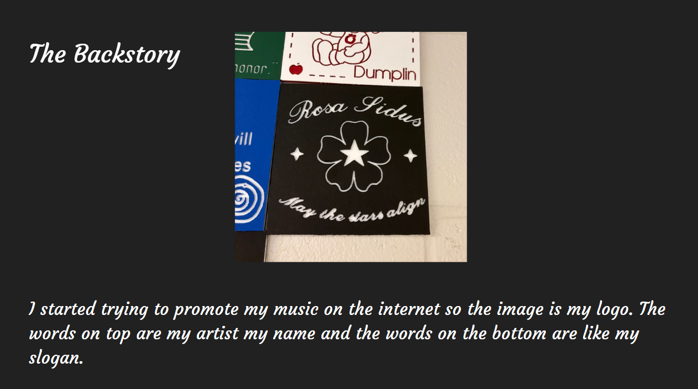

CNC Router Tile // Part One: VCarve
First I look a logo that I drew and put it into a website that make it lineart. The I used "Trace Bitmap" to trace it in VCarve.

Then I edited the sketch and added text and stars till I liked it

Profile & Pocket
I used Profile (Lines) on the text & Pocket (Fills in shapes) for the flower and the stars.


VCarve Toolpath Preview

CNC Router Tile // Part Two: Machining
Setup process
To setup the router you have to center the bit over the thing you are engraving using the arrows highlighted red. then you would set the origin by pressing "Zero XY". Lastly you would zero the high by pressing "Zero Z".


Cutting Process
Before cutting I doubled the profile toolpath so the post processing would be easier.

Final Tile
Pre & Post Processing
The remaining plastic that the router couldn't remove I removed by hand with a box knife or snips


The Backstory

Back to 10th grade projects